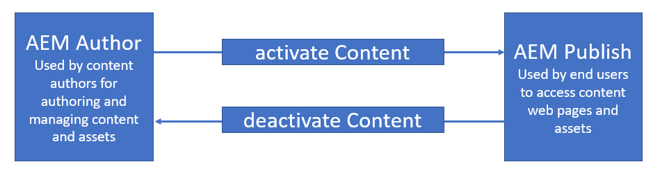
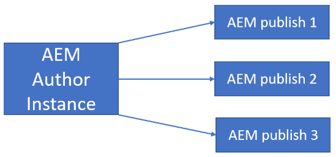
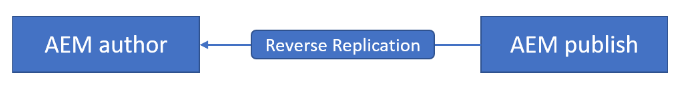
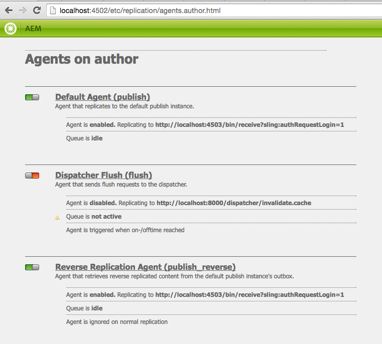

CHAPTER 3 : AEM Instances
To establish an end-to-end application in AEM, it is essential to have an author instance and at least one or more publish instances.
-
AEM Author:
 - AEM Author instances are typically hosted on a remote server, operating on port 4502.
- The instance resides behind an internal firewall on the remote server, often necessitating VPN access.
- Users utilize the author instance to generate content and transfer it to Publishers through activation.
- Additionally, the author instance serves as the environment for generating reports on authoring activity, uploading DAM assets, configuring components, and executing actions not intended for the website's end users.
- The author instance holds authority over the content that gets published, allowing users to activate content for public visibility and deactivate it when necessary.
- This process is facilitated through replication agents.
- The complete list of replication agents on the author instance can be viewed at /etc/replication/agents.author.html.
- To configure replication agents, users can access the Tool Admin page at /miscadmin#/etc/replication, where they can edit existing agents by selecting and adjusting settings.
- New replication agents are created through this admin page.
- Replication agents are configured with a URL and credentials pointing to the publish instance.
- The author instance transmits the content earmarked for publication to this URL (/bin/receive), and the publish instance processes the content, updating or creating pages/assets accordingly.
- When conducting local code testing, it is typically performed on a local author instance.
- While this suffices for most scenarios, when evaluating styles on an author instance, it is advisable to append "?wcmmode=disabled" to the URL being viewed.
- This ensures a user experience closely aligned with what the end user will encounter.
-
AEM Publish Instance: 
- The AEM Publish instance is typically hosted on port 4503 or any port number which is odd number , providing accessibility for end users.
- From publish instance AEM author can publish the content for the end user.
- In the context of reverse replication, content is replicated or deactivated from the publish instance back to the author.
- The AEM publish instance serves as the repository for the published content, supplying the dispatchers with the necessary content for user display.
- Content is transferred from the author instance to the publish instance when an author activates specific content.
- Publish instances resemble author instances in functionality, except for the actual content authoring capability.
- If there is a need to inspect content in the JCR of the publish instance, you can directly access CRXDE at (crx/de/index.jsp) and log in to gain entry to all other tools.
- Similarly, as with author instances, code must be deployed directly to the publishers to ensure accessibility for the user-facing site.
- Typically, this deployment is facilitated through Jenkins, with specific Jenkins jobs linked to the publishers.
The screenshot below illustrates the agents on the author page, highlighting the top three most commonly used replication agents, readily available by default.
